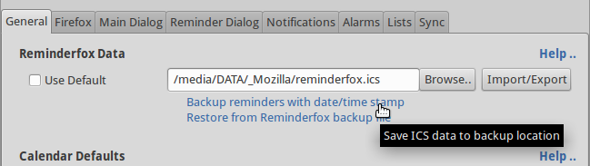
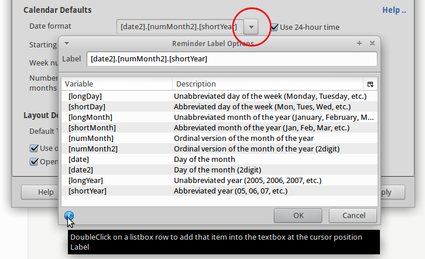

Optionen -- Bedienung und Einstellungen
Optionen -- Bedienung und Einstellungen
Optionen -- Bedienung und Einstellungen
Optionen -- Bedienung und EinstellungenDie Anpassung der zahlreichen Reminderfox Funktionen erfolgt mit dem 'Optionen/Einstellungen' Dialog.
Alle Konfigurationen und Einstellungen sind auf Registerkarten (Tabs) organisiert, die folgenden Abschnitte beschreiben jeden Tab.
Zum Öffnen dieses Dialogs bietet Reminderfox verschiedene Möglichkeiten:
Inhalt |

Die Termine und Erinnerungen speichert Reminderfox in einer "ICS" Datei. Die individullen Einstellungen, also wie der Benutzer seinen Reminderfox handhabt, werden in einer weiteren Datei angelegt.
Der standardmäßige Ablageort der Dateien ist im Benutzerprofil. Die "ICS" Datei kann aber nach Belieben verschoben werden, hierfür ist die Eingabe im Bereich "Reminderfox Daten".
Wird "Standard" aktiert, so erfolgt die Speicherung im Benutzerprofil, sonst lässt sich ein beliebiger anderen Speicherplatz wählen.
Mit der Schaltfläche [Import/Export] öffnet sich ein zusätzliches Fenster. Dort können die "ICS" Termin/Aufgaben Daten sowie in einem extra Teil die Reminderfox Einstellungen importiert und exportiert werden.
Wichtig: Nach Aufruf [Importieren ..] wird gefragt, ob die neuen Daten hinzugefügt oder alle bestehenden überschrieben werden sollen. Das Exportieren betrifft alle vorhandenen Termine und Erinnerungen.
Reminderfox speichert automatisch Backup-Versionen Ihrer Erinnerungen.
Diese Backups werden neben der Datei gespeichert, in der Ihre Erinnerungsdaten gespeichert sind. Die Sicherungsdateien
haben die Erweiterung .bak1 ...bak3.
Es ist eine gute Idee, eigene Backups zu erstellen; ein Backup mindestens einmal
im Monat durchzuführen, ist eine gute Praxis.
|
 |
Wählen Sie den ersten Link, um Ihr eigenes Backup zu starten. Es öffnet sich ein Verzeichnis/Datei-Dialog, so dass Sie einen anderen Speicherort / Speichergerät (USB-Stick) auswählen können. Der zweite Link ermöglicht es Ihnen, nach einer zuvor gespeicherten Sicherungsdatei zur Wiederherstellung zu suchen. |
Das Datumsformat läßt sich in Reminderfox vielfältig ändern. Drücken Sie die Menütaste (siehe unten), um einen weiteren Dialog zu öffnen. Verwenden Sie es wie im Tooltip gezeigt. 
Einstellung als 24-h oder als AM/PM Notation.
Reminderfox ist als AddOn integriert in Thunderbird. Dieser Tab konfiguriert den Zugriff von Reminderfox aus Thunderbird.
Um den auf Thunderbird installierten Reminderfox mit seinem Hauptdialog zu öffnen gibt es verschiedene Methoden. Die bequemste Methode bietet das 'Foxy' Icon auf einer der Thunderbird Menüleisten.
 |
Im Einstellungsabschnitt 'Reminderfox auf TB' sind
hat die Steuerelemente für das Foxy-Symbol.
Es kann mit dem normalen "Anpassen" auf den verschiedenen Menüleisten
platziert / entfernt werden.
Die Ticbox neben "Show Foxy-Icon" kontrolliert ob das 'Foxy' MenüIcon eingeschaltet ist. Das Symbol 'Foxy' kann ein zusätzliches Abzeichen/Badge anzeigen. Das im Konfigurations Pulldown-Menü bietet sich die Möglichkeit, auszuwählen welche Details angezeigt werden: Heute und/oder in Kommende. Alternativ kann auch der aktuelle Erinnerungstext bis zu einer ausgewählten Länge konfiguriert werden. Die Auswahl einer Textlänge von 0 würde den Text ausblenden. Hinwies: Das Deaktivieren der Ticbox wird die Status-/Addonleiste nicht ausblenden, so dass sie für andere Zwecke nicht ausgeblendet wird. |
Beim Arbeiten mit Webseiten oder E-Mails ist es hilfreich,
Erinnerungen/Todos zu generieren, damit ein einfacher Rückruf möglich ist.
Mit Hilfe von Erinnerungen für E-Mail-Nachrichten ist es möglich, eine Nachricht mit
einer Erinnerung aus dem Reminderfox heraus zu öffnen, siehe auch
E-Mail Integration.
 |
How to work on messages can be found on Add/Subscribe Reminders Auf dem Tab:System (Thunderbird) -- siehe oben -- kann diese Funktion ein- und ausgeschaltet werden. Je nach Einstellung wird der Kontextmenüpunkt [Hinzufügen/Abonnieren mit Reminderfox] in der E-Mail-Nachricht angezeigt. |
Für Details zum Drucken und Anzeigen einer Agenda siehe hier.
Das Drucken ist über das Kontextmenü auf der Hauptliste möglich.
Mit der oben gezeigten Ticbox kann der Benutzer das Öffnen einer Agenda auf einer
separaten Registerkarte von Firefox oder Thunderbird aktivieren.
Bei Bedarf werden die normalen Systemgriffe verwendet, um diese Seite zu drucken.

Reminderfox features a variable text size concept with simple key operations. A default text size for the Reminderfox Dialog can be defined with the setting of ''Default Text Size", a typical value is 12 px. Once the Reminderfox Dialog is opened use the following keys to change the text size on "Main List" and the "Calendar" separately
[ Cntrl ] [ + ] [ - ] [ # ] |
Change the size for Calendar |
[ Alt ] [ + ] [ - ] [ # ] |
Change the size for List |
[ # ] = Reset to default text size |
Both settings are stored when closing the ReminderFox Dialog and will be reused with next start.
Um einen besseren Zugriff auf die Listen für Termine, Aufgaben oder den Benutzerlisten zu erhalten, kann eigestellt werden, dass das Auswahlmenü schon öffnet, wenn der Mauszeiger über die Schaltfläche bewegt wird.

Kategorien sind ein Mittel die Termine und Aufgaben in gewünschte Sachgruppen zusammenzufassen. So ist es leicht möglich in den ReminderFox Listen die Termine und Aufgaben nach diesen Begriffen zu filtern.
Anlegen/Löschen der 'Kategorien' erfolgt in einem Dialogfenster über ein Icon
 , das direkt
bei der Bearbeitung eines Termines/Aufgabe aufgerufen wird.
Auch im Bereich Optionen/Einstellungen auf dem Tab 'Erinnerungen' ist dieses Dialogfenster zugänglich.
, das direkt
bei der Bearbeitung eines Termines/Aufgabe aufgerufen wird.
Auch im Bereich Optionen/Einstellungen auf dem Tab 'Erinnerungen' ist dieses Dialogfenster zugänglich.

Unterschieden werden 'Standard Kategorien' und 'Andere Kategorien':
Hier in den Optionen lassen sich die Standard-Kategorien mit [Hinzufügen], [Bearbeiten], [Löschen] bearbeiten oder für die Kategorie-Menüauswahl in der Reihenfolge verschieben.
Für jeden Termin oder jede Aufgabe kann eine 'Benachrichtigung' festgelegt werden.
Diese Benachrichtigung wird entsprechend der eingestellten Zeit vor dem Termin
als 'Benachrichtigungsfenster' angezeigt. (Siehe Eingabe von Terminen/Aufgaben)
Diese Benachrichtigung wird wiederholt, bis sie abgeschaltet, der Termin gelöscht oder als erledigt markiert wird.
Mit diesem Tab 'Benachrichtigungen' kann das Verhalten der Benachrichtigungen eingestellt werden.
'Tooltip' ist ein Hinweisbereich, in dem laufende und kommende Ereignisse angezeigt werden. Die Anzeige der 'Tooltip' erfolgt, indem der Mauszeiger über das 'Foxy' Symbol auf der Thunderbird Menuleiste geführt wird.
Mit den Kontrollboxen eingestellt, was angezeigt werden soll:
So z.B. ergibt diese Eingabe [shortDay] [date].[shortMonth]: [reminderDesc] ([time])
die folgende Anzeige: Di 21.Jun: Treffen mit Schmidt (14:30).
Ebenso kann die Anzahl der Tage bis zum Termin angegeben werden: [shortDay] [date].[shortMonth]: [reminderDesc] ([time]) -- in [daysUntil] Tagen
Dies ergibt: Di 23.Jun: Timmy's Geburtstag -- in 4 Tagen
Hinweis: Leerzeichen und andere Zeichen werden wie angegeben übernommen!
> [heutige und kommende], [nur heutige] oder [nur künftige] Termine
> in welchem Minutentakt die Benachrichtigungen wiederholt werden sollen

Neben 'Terminen' und 'Aufgaben' bietet Reminderfox die Anlage individueller 'Listen'.
Diese Listen könnten beinhalten: Projektereignisse, Filmlisten/Alben (mit Erscheinungsdatum),
Einkaufslisten oder was auch immer in einer Liste zusammen gefasst werden kann.
Dies ist für Leute gedacht, die gerne mit Listen arbeiten.
Individuelle Listen sind identisch zur Aufgabenliste. Somit gelten alle Optionen und Einstellungen genauso. Mit dem Kontextmenü können Einträge sowohl innerhalb einer Liste als auch in jede andere Liste verschoben werden.
In diesem Tab erfolgt die Verwaltung der individuellen Listen.
Mit dem Aufruf werden die Namen der bereits vorhandenen Listen angezeigt. Über die Schaltflächen ist ein Bearbeiten der Listen möglich:
Siehe auch: Austauschen von Terminen und Aufgaben.
{kind=link}
{kind=link}
{kind=link}
{kind=link}